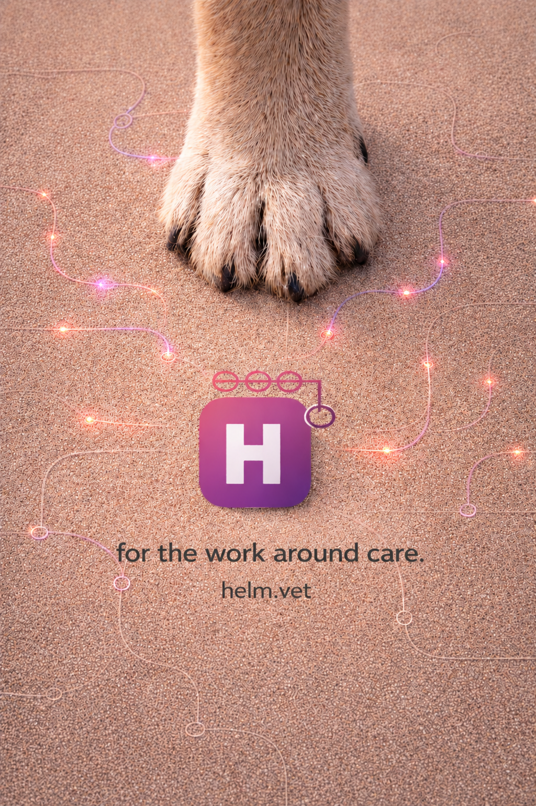

Veterinary practice runs on more than just the clinical record.
Follow-ups, handovers, claims, complaints, team updates, SOPs, operational questions and good ideas.
Too much of it is still held together by WhatsApp, inboxes, notes, passing comments, memory and goodwill.
Helm is being built to give veterinary teams one calm, shared place to see what needs doing, who owns it and what happens next.
Helm sits alongside the systems your practice already uses, including your PMS. It gives communication, coordination and follow-through one shared place.

For early conversations, pilots or partnership enquiries: